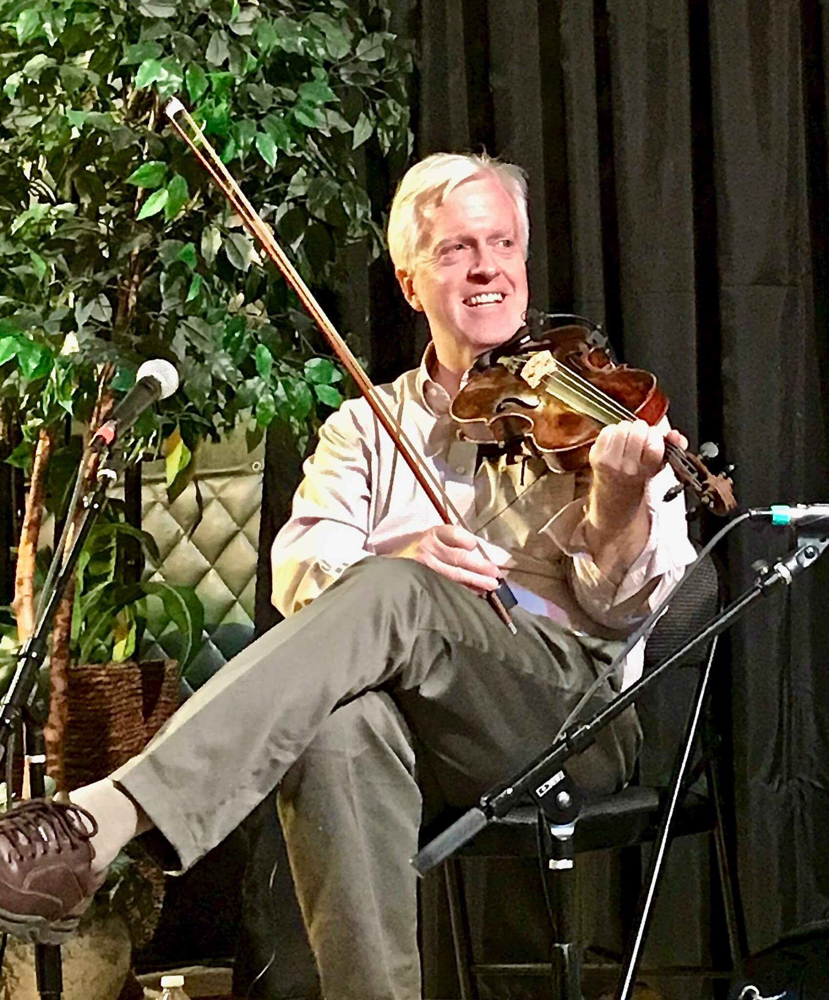
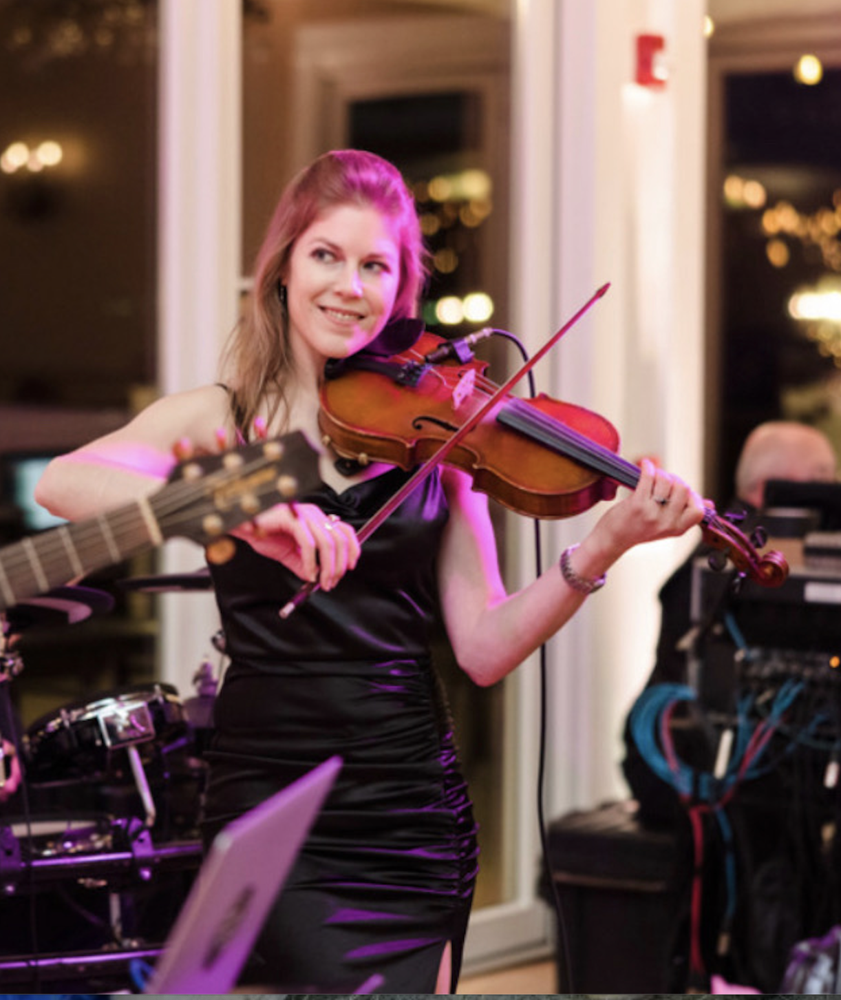

The fiddle holds a central place in the musical traditions of Ireland. Although it shares its structure with the violin, the Irish fiddle is distinguished by its distinctive playing style and expressive ornamentation. Over generations, Irish fiddlers developed intricate bowing patterns, rhythmic variations, and embellishments that give the music its unmistakable character.
By the late seventeenth century, fiddle music had become deeply embedded in Irish cultural life. As it spread through different regions, distinct stylistic traditions took shape—among them the Donegal, Sligo, Clare, and Kerry styles. Each is defined by subtle differences in rhythm, tempo, articulation, and ornamentation, passed down through the oral tradition and kept alive in local performances, sessions, and dances.
In the early 1900's in the United States, traditional Irish music found new life through transformative influence of Sligo Style fiddling. Michael Coleman - the most influential Irish fiddler of his time - brought this lyrical style, which took hold in the Bronx, New York, where Irish immigrants established a vibrant musical community. There, the New York Sligo Style emerged, distinct in its added drive and swing while maintaining the ornamental grace of its Irish origins.
A strong tradition in Irish music is the fiddle duet with accompaniment, exemplified by legendary Sligo Style partnership like Andy McGann and Paddy Reynolds. This requires mastering melody and harmony interplay and developing musical intuition for seamless performance. Bronx-born Brian Conway - son of Irish immigrants and one of the last direct links to Coleman through his studies with Andy McGann (a student of Coleman) and Martin Wynne (a student of Coleman's teacher) – has dedicated his career to preserving this heritage. As one of the world's premier fiddlers and a renowned teacher, Conway continues to pass the tradition to a new generation of musicians - including Cate Sandstrom – and is committed to keeping the Sligo Style alive.

Premier Irish-American fiddler, Brian Conway, performs with a skill, grace and force that are steeped in tradition but distinctively his own. Conway is a Smithsonian/Folkways recording artist, won numerous All-Ireland fiddling competitions, and has been called one of the best fiddlers of his generation.
Born and raised in the Bronx, Conway was fully immersed in the New York Sligo fiddle scene, studying with the legendary Martin Wynne, and later the great Andy McGann, a direct student of Michael Coleman.
His latest solo album, Wallace Avenue (July 2025), features collaboration with Brendan Dolan and showcases over 20 of his former and current students. For more information about Brian Conway and his accomplishments as a performer and teacher, visit brianconway.com.

Cate Sandstrom is a Traditional Irish Fiddler based in New York. She has a versatility that has enabled her to move seamlessly among several genres, which has guided her to her love of traditional Irish music.
She fell in love with traditional music in Canada, and then spent seven weeks in Ireland in 2012 where she began playing Irish music. Throughout college, Cate studied classical and Irish music.
Cate currently plays with the McLean Avenue Band and teaches private lessons and group workshops. She has taught at internationally recognized camps and for Tune Supply, has appeared on screen in "Life & Beth" and "Malevolence 3," has appeared on Brian Conway's latest album Wallace Avenue, and has performed in the United States, Canada, and Europe.
Brian Conway, Cate Sandstrom, and Brendan Dolan perform at Ossining Library
Brian Conway, Cate Sandstrom, and Don Penzien perform in Nashville, TN